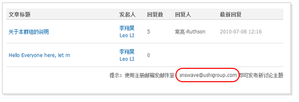
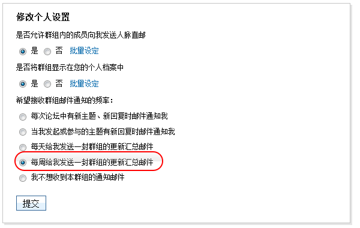
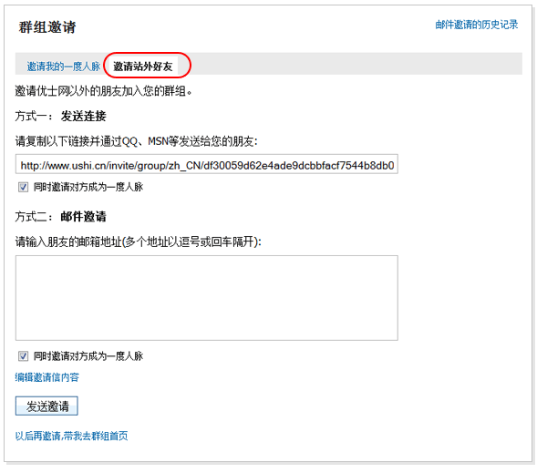
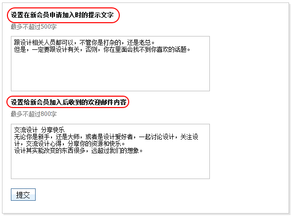

群组新功能
我们一直在认真倾听您的建议，并努力将它们融入到我们未来的开发计划中。以下这些是我们在7月份为您带来的新特性，旨在帮助您更方便的获取信息和提高沟通的效率。
简单分享，实时交流
从现在起，您可以登录优士网并在群组讨论区首页下方查看您所加入群组的邮件地址。各群组管理员可以为群组定义一个唯一的邮件地址，格式为 alias@ushigroup.com。 如 互联网创业 (Internet Startup Bootcamp)群组的群组邮件地址为internet@ushigroup.com。 只要您在今后使用优士网的注册邮箱发送邮件至此地址，便可进行内容发布。在收到其他成员发布的内容后，您也可以直接回复。这样，您可以无需登录优士网，通过您的电邮与其他成员交流。您甚至可以通过您的手机电邮客户端进行此操作！

频率设定，由我做主
无需访问网站，就通过邮件接收群组的内容更新，不错过任何有价值的信息。您还可以定制接收邮件的频率，如选择每个讨论主题或回复都发送邮件，或者每天、每周收到一封群组更新汇总邮件。这可以使您免于太多邮件的打扰。
点击群组首页右上方群组选项中的“个人设置”链接，您可以根据自己的习惯来自由设置。

活动组织，轻松便捷
我们对群组中的活动发布功能进行了加强，您不仅可以在群组中发布和参与活动，还可以直接向站外的朋友发送邀请，对方报名参加活动的同时也将成为群组成员。

群组选项，自由设定
用户可以自由定制哪些群组是否显示在自己的个人档案中，还可以设定是否允许其他群组成员向自己发送人脉直邮。批量管理，一次搞定！
对于群组管理员来说，进入“管理”栏目下的“个性化设定”标签中，还可以设定针对新会员申请加入时的个性化提示信息，以及加入群组后所受到的欢迎邮件中的内容。
